Reproducing the research program with flows
Source:vignettes/reproducing-the-program.Rmd
reproducing-the-program.RmdAbout this vignette. All data are simulated with
wgh_simulate(). The flows run in development mode (wgh_config("dev")): SITAR models use at most 1,000 children each, bootstraps use 10 replicates and cross-validation 3 folds. The results show what each flow produces. They resemble the published patterns but are not the published findings, and they are not research results.
WeGrowHealthR reproduces the analyses of a research program on the
growth of urban schoolchildren. Each study has a flow:
one function that runs the analysis from visits to tables and figures
and returns a wgh_report. Called with your data, a flow
runs the same analysis on them. Called without data, it simulates a
cohort that resembles the published one.
This vignette first explains how flows work, then runs every one of the 14 flows on the same simulated cohort, showing for each the report, one of its tables and one of its figures, and what to look at. It ends with chaining, pipelines, your own data, corrected methods and citation.
The studies and their flows
| Ref | Study | Flow | Reuses |
|---|---|---|---|
| [1] | Ho et al. 2026, Sci Rep 16:7515 | wgh_flow_secular_trends() |
|
| [2] | Ho et al. 2026, medRxiv 2026.07.26.26358982 | wgh_flow_malnutrition_trends() |
|
| [3] | Ho et al. 2026, medRxiv 2026.07.26.26358003 | wgh_flow_index_trajectory() |
|
| [4] | Ho et al. 2026, medRxiv 2026.07.26.26358986 | wgh_flow_pubertal_spurt() |
|
| [5] | Ho 2026, manuscript under review, late-adolescent height prediction | wgh_flow_height_prediction() |
pubertal spurt report |
| [6] | Ho 2026, medRxiv 2026.09.08.26362487 | wgh_flow_distributional_height() |
|
| [7] | Ho 2026, medRxiv 2026.09.04.26362313 | wgh_flow_velocity_distribution() |
pubertal spurt report |
| [8] | Ho 2026, medRxiv 2026.09.09.26362696 | wgh_flow_spurt_duration() |
pubertal spurt report |
| [9] | Ho 2026, medRxiv 2026.09.05.26362315 | wgh_flow_growth_phenotypes() |
pubertal spurt report |
| [10] | Ho 2026, medRxiv 2026.09.23.26363771 | wgh_flow_conditional_references() |
|
| [11] | Ho 2026, manuscript under review, canalization | wgh_flow_canalization() |
|
| [12] | Ho 2026, manuscript under review, growth inequality | wgh_flow_growth_inequality() |
|
| [13] | Ho 2026, manuscript in preparation, growth phenotypes and later health | wgh_flow_phenotype_outcomes() |
growth phenotype report |
| [14] | Ho 2026, manuscript under review, explainable growth prediction | wgh_flow_explain_prediction() |
The full references are listed at the end.
wgh_references() returns them with their DOIs.
How a flow works
Every flow takes the data as x and a run
mode, and returns a report:
-
rep$tables: named tables, the tables of the study, -
rep$figures: named ggplot figures, shown withplot(rep, "name"), -
rep$models: the fitted models, -
rep$sample_flow: the analytic sample, step by step, -
rep$model_status: every model that was fitted, failed or skipped, with the reason, -
rep$settings: the settings used.
wgh_export(rep, "folder") writes every table to one
Excel workbook, every figure as TIFF and PDF at 600 dpi, and a
reproducibility bundle.
The cohort
All flows below use one simulated cohort followed for 14 school years, so that children are seen both before puberty and in late adolescence.
wgh_config("dev")
#> WeGrowHealthR run mode: dev
v <- wgh_simulate(8000, seed = 7, years = 2012:2025, missing_years = integer(),
dropout = c(intercept = -4, age = 0), entry_first_prob = 0.9)$visits
c(children = length(unique(v$pid)), visits = nrow(v))
#> children visits
#> 5664 229061. Secular trends, prevalence and regional differences [1]
wgh_flow_secular_trends() describes the cohort, compares
median height by age across calendar years and sites, fits GEE calendar
trends, and estimates nutritional status prevalence with simultaneous
intervals and trend tests. fit_lms = TRUE (default) also
fits cohort LMS centiles with gamlss.
trends <- wgh_flow_secular_trends(v, fit_lms = FALSE)
trends
#>
#> -- Secular trends, prevalence and regional differences (Ho et al. 2026, Sci Rep 16:7515) --
#>
#> Tables (12): table1_visits, median_height_by_age_year, median_trend_tests,
#> height_first_vs_last_year, height_site_differences, gee_height_slopes, prevalence_5_18,
#> prevalence_under5, overweight_obesity_by_year, overweight_obesity_by_site, stunting_by_age_group,
#> trend_tests
#> Figures (3): fig_median_height, fig_prevalence_trend, fig_status_bars
#> Models: gee_height
#> Model status: 1 ok, 0 failed, 1 skipped
#> skipped: Cohort LMS height centiles (fit_lms = FALSE)
#> Settings: mode = dev; n_children = 5664; n_visits = 22906
trends$tables$overweight_obesity_by_site
#> # A tibble: 6 x 7
#> sex site n cases prevalence lower upper
#> <chr> <chr> <int> <int> <dbl> <dbl> <dbl>
#> 1 Male Site1 5427 2497 46.0 44.7 47.3
#> 2 Female Site1 5485 1346 24.5 23.4 25.7
#> 3 Male Site2 2697 1364 50.6 48.7 52.5
#> 4 Female Site2 2324 647 27.8 26.1 29.7
#> 5 Male Site3 1035 601 58.1 55.0 61.0
#> 6 Female Site3 854 293 34.3 31.2 37.6
plot(trends, "fig_prevalence_trend")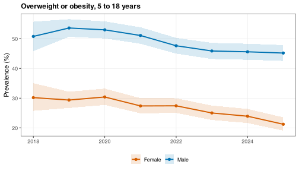
What to look at. The sex difference in overweight and obesity, the differences between sites and the direction of the calendar trend.
2. Stunting, thinness, obesity and the double burden [2]
wgh_flow_malnutrition_trends() estimates four indicators
by sex and year, tests trends, fits GEE logistic models of calendar
trends within age groups and measures the double burden of malnutrition
in children and in populations.
maln <- wgh_flow_malnutrition_trends(v)
maln
#>
#> -- Stunting, thinness, obesity and double burden (Ho et al. 2026, medRxiv 2026.07.26.26358982) --
#>
#> Tables (6): table1, prevalence_by_year, trend_tests, gee_odds_ratios, double_burden, median_by_site
#> Figures (4): fig_trends, fig_status_bars, fig_dbm_heatmap, fig_or_forest
#> Model status: 4 ok, 0 failed, 0 skipped
#> ok: GEE calendar trend, stunting (warning: Skipping age group(s) 10-14 y, 15-18 y with fewer than
#> 10 events. | Skipping age group(s) 5-9 y, 10-14 y with fewer than 10 events.)
#> Settings: mode = dev; n_children = 5664
head(maln$tables$gee_odds_ratios)
#> # A tibble: 6 x 12
#> indicator sex term estimate se lower upper p_value age_group or_per_year or_lower
#> <chr> <chr> <chr> <dbl> <dbl> <dbl> <dbl> <dbl> <chr> <dbl> <dbl>
#> 1 stunting Male age_group~ -0.0670 0.0511 -0.167 0.0332 1.90e-1 <5 y 0.935 0.846
#> 2 stunting Male age_group~ 0.0477 0.0635 -0.0767 0.172 4.53e-1 5-9 y 1.05 0.926
#> 3 stunting Female age_group~ -0.233 0.0584 -0.348 -0.119 6.40e-5 <5 y 0.792 0.706
#> 4 stunting Female age_group~ -0.107 0.105 -0.314 0.0988 3.07e-1 15-18 y 0.898 0.731
#> 5 thinness Male age_group~ -0.0140 0.0366 -0.0859 0.0578 7.02e-1 <5 y 0.986 0.918
#> 6 thinness Male age_group~ 0.0523 0.0448 -0.0355 0.140 2.43e-1 5-9 y 1.05 0.965
#> # i 1 more variable: or_upper <dbl>
plot(maln, "fig_or_forest")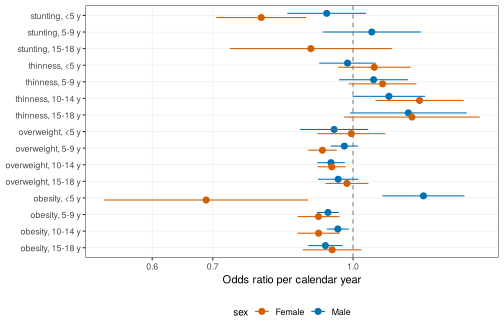
What to look at. Odds ratios below 1 mean an indicator becomes less common each year. Age groups with too few cases are skipped and listed in the model status.
3. Prepubertal BMI and the height trajectory [3]
wgh_flow_index_trajectory() assigns a BMI category at a
prepubertal index age, compares HAZ between categories at milestone
ages, fits mixed models of the HAZ trajectory and reports contrasts at
stated ages.
traj <- wgh_flow_index_trajectory(v)
traj
#>
#> -- Prepubertal BMI and height trajectory (Ho et al. 2026, medRxiv 2026.07.26.26358003) --
#>
#> Tables (9): index_category, kruskal_wallis, dunn, median_haz, fit_stats_male, fit_stats_female,
#> contrasts, bmi_change, sensitivity_4plus_visits
#> Figures (2): fig_trajectories, fig_height_trajectories
#> Models: Male, Female
#> Settings: mode = dev; index_age = 11/ 9
head(traj$tables$contrasts)
#> # A tibble: 6 x 10
#> sex contrast age estimate SE df asymp.LCL asymp.UCL z.ratio p.value
#> <chr> <fct> <dbl> <dbl> <dbl> <dbl> <dbl> <dbl> <dbl> <dbl>
#> 1 Male Overweight - Normal 8 0.0841 0.0556 Inf -0.0490 0.217 1.51 1.30e- 1
#> 2 Male Obesity - Normal 8 0.232 0.0560 Inf 0.0977 0.366 4.14 1.05e- 4
#> 3 Male Obesity - Overweight 8 0.148 0.0641 Inf -0.00578 0.301 2.30 4.25e- 2
#> 4 Male Overweight - Normal 10 0.184 0.0513 Inf 0.0616 0.307 3.59 6.52e- 4
#> 5 Male Obesity - Normal 10 0.383 0.0517 Inf 0.260 0.507 7.42 3.57e-13
#> 6 Male Obesity - Overweight 10 0.199 0.0591 Inf 0.0576 0.340 3.37 7.52e- 4
plot(traj, "fig_trajectories")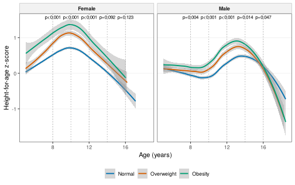
What to look at. The height advantage of children with obesity before puberty, and how it shrinks or reverses in adolescence.
4. The pubertal growth spurt by SITAR [4]
wgh_flow_pubertal_spurt() fits SITAR models for boys and
girls, checks them, estimates the population APHV and PHV with
intervals, extracts each child’s timing and intensity and relates them
to prepubertal BMI and height. Its report is reused by the next
flows.
spurt <- wgh_flow_pubertal_spurt(v)
#> SITAR fitted to a random 1000 of 1433 children (run mode "dev").
#> SITAR fitted to a random 1000 of 1203 children (run mode "dev").
spurt
#>
#> -- Pubertal growth spurt by SITAR (Ho et al. 2026, medRxiv 2026.07.26.26358986) --
#>
#> Tables (7): age_density, model_diagnostics, aphv_phv_population, individual_effects,
#> individual_summary, timing_models, early_timing_logistic
#> Figures (3): fig_velocity, fig_height, fig_aphv_by_bmi
#> Models: sitar_male, sitar_female
#> Diagnostics: identifiability
#> Settings: mode = dev; ci_B = 0
spurt$tables$aphv_phv_population
#> # A tibble: 2 x 10
#> sex method aphv aphv_lower aphv_upper phv phv_lower phv_upper n_children replicates
#> <chr> <chr> <dbl> <dbl> <dbl> <dbl> <dbl> <dbl> <int> <int>
#> 1 Male legacy (not a ~ 12.1 12.0 12.1 10.1 10.1 10.1 1000 NA
#> 2 Female legacy (not a ~ 8.96 8.92 9.00 7.94 7.89 7.99 1000 NA
plot(spurt, "fig_velocity")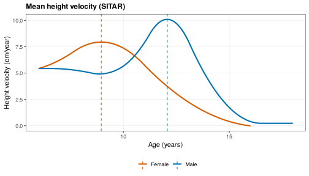
What to look at. Girls reach their peak years before
boys. The early_timing_logistic table shows how prepubertal
BMI and height predict early timing.
5. Predicting late-adolescent height [5]
wgh_flow_height_prediction() builds a cohort of
prepubertal features and late-adolescent height, compares nine models on
the same folds and by site, attaches prediction intervals, checks
calibration and agreement, explains the gradient boosting model with
SHAP and shows a prediction for one child.
pred <- wgh_flow_height_prediction(v, spurt = spurt)
#> Warning in predict.lm(m, te): prediction from rank-deficient fit; attr(*, "non-estim") has doubtful
#> cases
#> Warning: M6 explains more than 90% of the variance.
#> i SITAR b and c were estimated with visits from the outcome window, so part of this performance is
#> leakage. Treat M6 as an upper bound.
pred
#>
#> -- Late-adolescent height prediction (Ho 2026, manuscript under review) --
#>
#> Tables (10): attrition, table1, cv_performance, apparent_performance, leave_one_site_out,
#> m5_vs_m7_bootstrap, m5_coefficients, prediction_intervals_m5, shap_importance_m7_boys,
#> example_prediction
#> Figures (6): fig_cv_rmse, fig_calibration_m5, fig_bland_altman_m5, fig_obs_pred_all,
#> fig_shap_beeswarm_m7_boys, fig_child_prediction
#> Models: benchmark, loso
#> Diagnostics: model_errors
#> Settings: mode = dev; cohort_n = 358
pred$tables$cv_performance[, c("sex", "model", "n", "RMSE", "R2")]
#> # A tibble: 18 x 5
#> sex model n RMSE R2
#> <chr> <chr> <int> <dbl> <dbl>
#> 1 Male M0 147 3.57 0.294
#> 2 Male M1 147 2.60 0.625
#> 3 Male M2 147 2.33 0.699
#> 4 Male M3 147 2.53 0.645
#> 5 Male M4 147 2.49 0.655
#> 6 Male M5 147 2.50 0.654
#> 7 Male M6 96 0.950 0.951
#> 8 Male M7 147 2.60 0.626
#> 9 Male M8 147 2.73 0.588
#> 10 Female M0 211 4.57 0.0812
#> # i 8 more rows
plot(pred, "fig_child_prediction")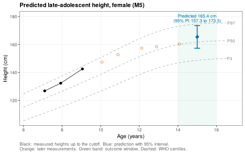
What to look at. Whether complex models beat the linear mixed model (M5), the width and coverage of the prediction intervals, and that M6 is an upper bound because SITAR timing uses outcome-window visits (the flow warns about this).
6. BMI and the height-for-age distribution [6]
wgh_flow_distributional_height() fits quantile models of
HAZ on BAZ with a spline of age, by sex, reads BAZ slopes at stated ages
with a child-level bootstrap and tests whether slopes differ across
quantiles and between the sexes. engine = "lqmm" (default)
uses linear quantile mixed models as in the study, "rq" the
faster pooled model used here.
dist <- wgh_flow_distributional_height(v, engine = "rq")
dist
#>
#> -- BMI and the height-for-age distribution (Ho 2026, medRxiv 2026.09.08.26362487) --
#>
#> Tables (6): mean_model_slopes_male, mean_model_slopes_female, quantile_slopes, heterogeneity,
#> sex_difference, crossing
#> Figures (2): fig_coefficient_functions, fig_spread_by_bmi
#> Models: Male, Male_mean, Female, Female_mean
#> Model status: 14 ok, 0 failed, 1 skipped
#> skipped: qgam sensitivity analysis (sensitivity = FALSE)
#> Settings: mode = dev; engine = rq
head(dist$tables$quantile_slopes)
#> # A tibble: 6 x 7
#> sex age tau estimate boot_se lower upper
#> <chr> <dbl> <dbl> <dbl> <dbl> <dbl> <dbl>
#> 1 Male 6 0.1 -0.0247 0.0451 -0.0489 0.0681
#> 2 Male 9 0.1 0.0503 0.0349 -0.00655 0.0901
#> 3 Male 12 0.1 0.103 0.0431 0.0754 0.186
#> 4 Male 15 0.1 -0.00523 0.0265 -0.0557 0.0305
#> 5 Male 6 0.25 0.0116 0.0285 -0.0338 0.0533
#> 6 Male 9 0.25 0.0513 0.0364 0.00652 0.108
plot(dist, "fig_coefficient_functions")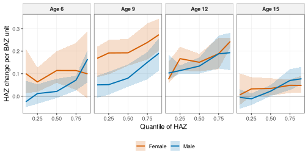
What to look at. Whether the BAZ slope differs between the lower and upper quantiles, and how it changes from childhood to adolescence.
7. Prepubertal BMI and the distribution of pubertal velocity [7]
wgh_flow_velocity_distribution() relates prepubertal BMI
to the whole distribution of height velocity around puberty, and to each
child’s timing, intensity and peak velocity, with quantile models and a
mediation analysis through timing.
vel <- wgh_flow_velocity_distribution(v, spurt = spurt)
vel
#>
#> -- Prepubertal BMI and the distribution of pubertal velocity (Ho 2026, medRxiv 2026.09.04.26362313) --
#>
#> Tables (3): velocity_quantile_slopes, scalar_quantiles, mediation_timing
#> Figures (3): fig_velocity_aphv_male, fig_velocity_aphv_female, fig_velocity_slopes
#> Settings: mode = dev
vel$tables$mediation_timing
#> # A tibble: 8 x 5
#> sex effect estimate lower upper
#> <chr> <chr> <dbl> <dbl> <dbl>
#> 1 Male Total effect 0.0714 0.0595 0.0877
#> 2 Male Natural direct effect -0.0322 -0.0423 -0.00873
#> 3 Male Natural indirect effect 0.104 0.0868 0.115
#> 4 Male Proportion mediated 1.45 1.11 1.59
#> 5 Female Total effect 0.133 0.0971 0.174
#> 6 Female Natural direct effect -0.0107 -0.0191 0.0331
#> 7 Female Natural indirect effect 0.144 0.111 0.176
#> 8 Female Proportion mediated 1.08 0.805 1.18
plot(vel, "fig_velocity_slopes")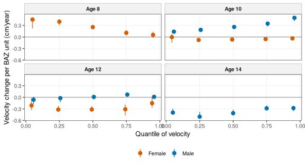
What to look at. Higher prepubertal BMI raises velocity before the usual peak age and lowers it later, because it shifts the spurt earlier. The mediation table shows how much of the BMI effect on peak velocity passes through timing.
8. The duration of the pubertal spurt [8]
wgh_flow_spurt_duration() measures each child’s spurt
width on the spurt amplitude, shows how often the older fraction-of-peak
definition is censored, and relates duration to prepubertal BMI with and
without adjustment for timing and intensity.
dur <- wgh_flow_spurt_duration(v, spurt = spurt)
dur
#>
#> -- Duration of the pubertal growth spurt (Ho 2026, medRxiv 2026.09.09.26362696) --
#>
#> Tables (6): duration_features, censoring, fpca_variance, duration_ols, duration_quantile,
#> sex_interaction
#> Figures (1): fig_duration_by_bmi
#> Model status: 2 ok, 0 failed, 0 skipped
#> Settings: mode = dev
dur$tables$censoring
#> # A tibble: 4 x 4
#> sex definition pct_left_censored median_width
#> <chr> <chr> <dbl> <dbl>
#> 1 Male amplitude (default) 0 2.32
#> 2 Male fraction of PHV (legacy) 0 4.46
#> 3 Female amplitude (default) 0 3.24
#> 4 Female fraction of PHV (legacy) 100 NA
dur$tables$duration_ols
#> # A tibble: 4 x 7
#> sex model term estimate lower upper p_value
#> <chr> <chr> <chr> <dbl> <dbl> <dbl> <dbl>
#> 1 Female unadjusted baz_pre -0.0767 -0.101 -0.0522 0.00000000129
#> 2 Female adjusted_timing_intensity baz_pre -0.00162 -0.00555 0.00232 0.421
#> 3 Male unadjusted baz_pre -0.0174 -0.0241 -0.0107 0.000000505
#> 4 Male adjusted_timing_intensity baz_pre 0.0000517 -0.000251 0.000354 0.738
plot(dur, "fig_duration_by_bmi", alpha = 0.4)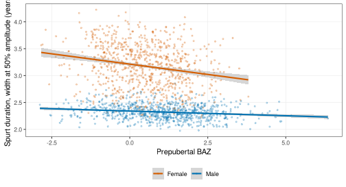
What to look at. The censoring table, and whether the BMI association with duration remains after adjusting for timing and intensity.
9. Peri-pubertal growth phenotypes [9]
wgh_flow_growth_phenotypes() summarises trajectories
with functional PCA, adds SITAR timing and intensity, clusters children
with Gaussian mixtures, names the phenotypes, checks their stability and
validity, and relates them to late height-for-age.
pheno <- wgh_flow_growth_phenotypes(v, spurt = spurt)
pheno
#>
#> -- Growth phenotypes by functional clustering (Ho 2026, medRxiv 2026.09.05.26362315) --
#>
#> Tables (5): centroids, stability, validation, late_haz_link, leakage_note
#> Figures (4): fig_bic_male, fig_phenotypes_male, fig_bic_female, fig_phenotypes_female
#> Models: Male, Female
#> Model status: 4 ok, 0 failed, 0 skipped
#> Settings: mode = dev; max_age = 18
pheno$tables$centroids
#> # A tibble: 9 x 8
#> sex cluster name share fpc1 fpc2 b c
#> <chr> <dbl> <chr> <dbl> <dbl> <dbl> <dbl> <dbl>
#> 1 Male 1 Average 0.578 -0.0440 0.178 -0.0885 0.0760
#> 2 Male 2 Late 0.0963 -0.498 -0.615 1.06 -0.123
#> 3 Male 3 Average 1 0.0753 0.000581 0.721 -0.395 0.0238
#> 4 Male 4 Average 2 0.251 0.293 -0.391 -0.0861 -0.135
#> 5 Female 1 Late, slow 0.301 -0.338 -0.966 0.865 -0.793
#> 6 Female 2 Average 0.217 -0.261 -0.170 -0.483 0.223
#> 7 Female 3 Tall, early, fast 0.205 0.807 0.981 -0.974 1.22
#> 8 Female 4 Average 1 0.204 -0.135 0.484 -0.0520 -0.0210
#> 9 Female 5 Late, slow 1 0.0737 0.274 0.374 0.746 -0.748
pheno$tables$stability
#> # A tibble: 2 x 6
#> sex G model ari_median ari_lower ari_upper
#> <chr> <int> <chr> <dbl> <dbl> <dbl>
#> 1 Male 4 EVV 0.567 0.195 0.754
#> 2 Female 5 VVV 0.420 0.178 0.548
plot(pheno, "fig_phenotypes_female")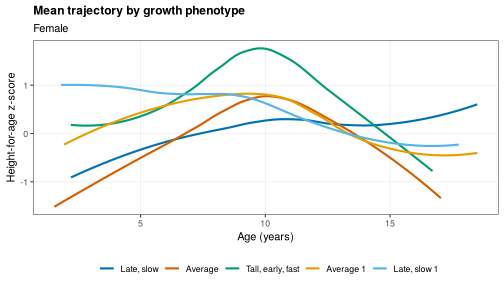
What to look at. Interpretable phenotypes (for example tall, early and fast), their shares, and an adjusted Rand index well above zero.
10. Conditional growth references [10]
wgh_flow_conditional_references() predicts each child’s
later height-for-age distribution from earlier growth, validates the
references against unconditional, persistence and WHO benchmarks by
cross-validation and by site, checks calibration, flags children outside
their own expected range and draws fan charts.
cond <- wgh_flow_conditional_references(v, window = c(5, 9), targets = c(10, 12, 14))
cond
#>
#> -- Conditional growth references (Ho 2026, medRxiv 2026.09.23.26363771) --
#>
#> Tables (9): panel_size, table1, coefficients_median, cv_scores_by_fold, cv_scores,
#> leave_one_site_out, calibration, centiles, flags
#> Figures (4): fig_scores, fig_calibration, fig_fan_low, fig_fan_high
#> Models: condref
#> Settings: mode = dev; window = 5/9; targets = 10/12/14
aggregate(cbind(crps, coverage_90, width_90) ~ model, data = cond$tables$cv_scores, FUN = mean)
#> model crps coverage_90 width_90
#> 1 conditional 0.2135070 0.8860464 1.218909
#> 2 persistence 0.2373606 0.8921887 1.378867
#> 3 unconditional 0.4028554 0.8764118 2.366125
#> 4 who 0.5382017 0.9001946 3.289707
cond$tables$flags
#> sex target_nominal below above
#> 1 Male 10 3.1 3.1
#> 2 Female 10 3.1 3.1
#> 3 Male 12 2.7 3.0
#> 4 Female 12 2.3 2.6
#> 5 Male 14 2.5 3.3
#> 6 Female 14 3.3 2.5
plot(cond, "fig_fan_low")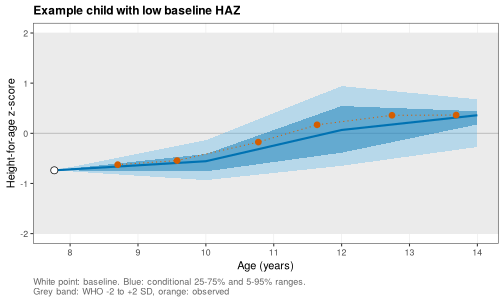
What to look at. The conditional reference has the lowest CRPS with coverage near 90% and a much narrower range than the WHO band.
11. Canalization, catch-up and catch-down [11]
wgh_flow_canalization() puts visits into height-for-age
bands, builds transition matrices, summarises persistence, catch-up and
catch-down by age, fits a continuous-time multistate model and mixed
models of catch-up and catch-down.
canal <- wgh_flow_canalization(v)
#> boundary (singular) fit: see help('isSingular')
#> boundary (singular) fit: see help('isSingular')
canal
#>
#> -- Canalization, catch-up and catch-down (Ho 2026, manuscript under review) --
#>
#> Tables (10): bands, transition_matrix, canalization, msm_intensity_check, msm_pmatrix_1y,
#> msm_sojourn, msm_hazard_ratios, msm_prevalence, glmm_catch_up, glmm_catch_down
#> Figures (2): fig_transition_heatmap, fig_prevalence_check
#> Models: msm, glmm_up, glmm_down
#> Settings: mode = dev
canal$tables$canalization
#> # A tibble: 6 x 7
#> sex age_block transitions persistence catch_up catch_down toward_median
#> <chr> <chr> <int> <dbl> <dbl> <dbl> <dbl>
#> 1 Male [5,9) 2808 87.9 15.5 20.0 18.1
#> 2 Female [5,9) 2671 74.5 69.7 4.59 14.4
#> 3 Male [9,13) 2141 73.3 45.3 8.10 20.4
#> 4 Female [9,13) 2099 74.5 18.4 34.4 33.8
#> 5 Male [13,19) 1597 70.3 4.17 68.6 50.7
#> 6 Female [13,19) 1418 88.9 4.97 22.9 10.5
plot(canal, "fig_transition_heatmap")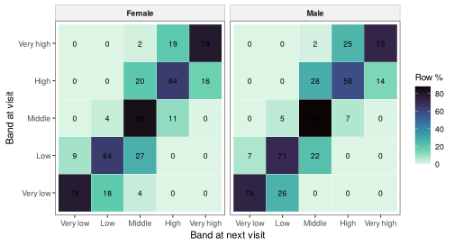
What to look at. High persistence on the diagonal,
moves mostly to adjacent bands, and the warning that part of every move
is measurement error. wgh_false_moves() estimates how large
that part is:
wgh_false_moves(v, error_sds = c(0.5, 1))
#> No error-free height in the data. The recorded height is used as the reference, so the shares are
#> lower bounds.
#> # A tibble: 2 x 6
#> error_sd_cm n_transitions persistence_pct observed_moves_pct false_moves_pct missed_moves_pct
#> <dbl> <int> <dbl> <dbl> <dbl> <dbl>
#> 1 0.5 16805 76.6 23.4 29.7 22.5
#> 2 1 16805 71.5 28.5 50.1 33.012. Growth inequality over age and BMI [12]
wgh_flow_growth_inequality() reads the spread of the
height-for-age distribution (the 5th to 95th centile range and the
interquartile range) at each age and BAZ, with bootstrap intervals, and
flags combinations with little data.
ineq <- wgh_flow_growth_inequality(v)
ineq
#>
#> -- Growth inequality: spread of height by BMI (Ho 2026, manuscript under review) --
#>
#> Tables (5): spread, change_per_baz, support, sample_size, empirical_check
#> Figures (2): fig_range90, fig_iqr
#> Models: Male, Female
#> Settings: mode = dev
ineq$tables$change_per_baz
#> # A tibble: 8 x 8
#> sex age range90_per_unit iqr_per_unit range90_lower range90_upper iqr_lower iqr_upper
#> <chr> <dbl> <dbl> <dbl> <dbl> <dbl> <dbl> <dbl>
#> 1 Male 6 0.154 0.0500 0.0866 0.274 0.0314 0.0790
#> 2 Male 9 0.170 0.0835 0.107 0.203 0.0203 0.120
#> 3 Male 12 0.142 0.0906 0.0772 0.208 0.0481 0.117
#> 4 Male 15 0.0806 0.0857 0.0444 0.124 0.0351 0.105
#> 5 Female 6 0.152 0.0700 0.00828 0.296 0.0462 0.129
#> 6 Female 9 0.181 0.0588 0.147 0.245 -0.00272 0.0928
#> 7 Female 12 0.172 0.0271 0.102 0.259 -0.0232 0.0824
#> 8 Female 15 0.136 0.0282 0.0989 0.227 -0.0421 0.0750
plot(ineq, "fig_range90")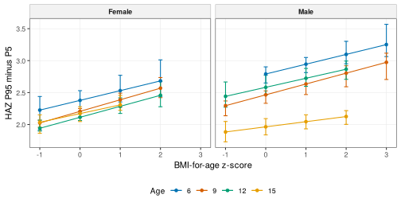
What to look at. Whether the spread widens or narrows as BAZ rises, and at which ages.
13. Growth phenotypes and later outcomes, growth side [13]
wgh_flow_phenotype_outcomes() links the phenotypes of
flow 9 to a later outcome with bootstrap intervals and a dose-response
model on timing. By default the outcome is overweight or obesity at 15
years or older. Pass your own outcome table as
outcome_data.
outc <- wgh_flow_phenotype_outcomes(v, phenotypes = pheno)
#> Warning: Fewer than 5 outcome events in phenotype(s) Average, Late, slow 1: estimates are unstable.
outc
#>
#> -- Growth phenotypes and later outcomes, growth side (Ho 2026, manuscript in preparation) --
#>
#> Tables (4): representativeness, phenotype_outcome, dose_response_timing, mediation
#> Figures (1): fig_forest
#> Settings: mode = dev; outcome = late_overweight_obesity
outc$tables$phenotype_outcome
#> # A tibble: 7 x 8
#> sex term estimate lower upper odds_ratio or_lower or_upper
#> <chr> <chr> <dbl> <dbl> <dbl> <dbl> <dbl> <dbl>
#> 1 Male phenotypeAverage -0.625 -1.41 -0.139 0.535 0.245 0.870
#> 2 Male phenotypeLate -0.822 -14.4 -0.165 0.440 0.000000547 0.848
#> 3 Male phenotypeAverage 1 0.581 -0.298 0.745 1.79 0.742 2.11
#> 4 Female phenotypeLate, slow -0.372 -0.801 -0.0286 0.689 0.449 0.972
#> 5 Female phenotypeAverage -0.0145 -1.10 0.895 0.986 0.333 2.45
#> 6 Female phenotypeTall, early, fast 1.73 1.21 3.39 5.65 3.35 29.8
#> 7 Female phenotypeLate, slow 1 -0.829 -15.5 0.614 0.436 0.000000188 1.85
plot(outc, "fig_forest")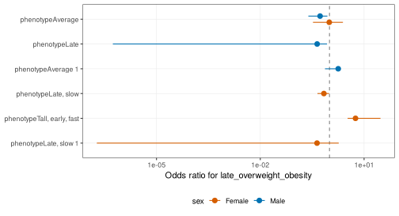
What to look at. Which phenotypes carry higher odds of the later outcome, and the warnings for phenotypes with few events.
14. Explainable individual growth prediction [14]
wgh_flow_explain_prediction() explains the conditional
reference models with exact SHAP values at the median and outer
quantiles, compares them with permutation importance and checks that
feature rankings are stable across folds.
expl <- wgh_flow_explain_prediction(v, window = c(5, 9), targets = c(10, 12))
expl
#>
#> -- Explainable individual growth prediction (Ho 2026, manuscript under review) --
#>
#> Tables (4): importance, permutation, rank_stability, interaction
#> Figures (3): fig_waterfall_example, fig_beeswarm_example, fig_quantile_resolved
#> Settings: mode = dev; taus = 0.1/0.5/0.9
expl$tables$rank_stability
#> # A tibble: 4 x 5
#> sex target scheme mean_spearman top_feature
#> <chr> <dbl> <chr> <dbl> <chr>
#> 1 Male 10 5 folds 1 baseline_haz
#> 2 Male 12 5 folds 1 baseline_haz
#> 3 Female 10 5 folds 1 baseline_haz
#> 4 Female 12 5 folds 1 baseline_haz
plot(expl, "fig_quantile_resolved")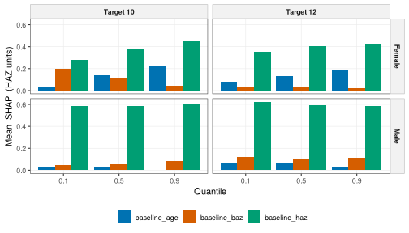
What to look at. Baseline height-for-age dominates every quantile, and the rankings are stable (mean Spearman correlation near 1).
Chaining and pipelines
The SITAR models of the pubertal spurt study are reused by flows 5,
7, 8 and 9, and the phenotypes by flow 13, as above.
wgh_use_pipeline() writes a targets pipeline
that chains all the flows in this order and caches each step:
wgh_use_pipeline("my_project", data_file = "visits.rds", mode = "publication")
targets::tar_make()For long runs, start parallel workers first with
wgh_parallel() (see
vignette("parallel-computing")).
Using your own data
gd <- wgh_data(mydata, id = "child_id", sex = "sex", dob = "birth_date", date = "visit_date",
height = "height_cm", weight = "weight_kg", site = "school")
wgh_config("publication")
rep <- wgh_flow_secular_trends(gd)
wgh_export(rep, "secular_trends")Corrected methods and legacy options
Reviewing the original analysis code found a few errors. The package uses the corrected method by default and keeps an option that reproduces the original output:
| Default (corrected) | Legacy option | What changed |
|---|---|---|
wgh_sitar_ci(method = "bootstrap") |
method = "legacy" |
APHV and PHV intervals come from a bootstrap over children |
wgh_sitar_effects() |
legacy_c_labels = TRUE |
Positive SITAR intensity c means a faster spurt |
| Exact individual APHV | none | Exact SITAR formula instead of APHV plus b
|
wgh_curve_features(reference = "takeoff") |
reference = "zero" |
Duration measured on the spurt amplitude |
wgh_zscore(method = "who") |
method = "lms" or "symmetric"
|
WHO restricted tails for weight and BMI |
wgh_benchmark(site_effect = "fixed") |
site_effect = "random" |
Site as a fixed effect in the model ladder |
wgh_leakage_check() |
none | Features from outcome-window visits are flagged |
wgh_compare_outputs() compares a report’s tables with
frozen tables from the original code, column by column.
Citing
Please cite the package (citation("WeGrowHealthR")) and
the studies whose analyses you reproduce.
References
Ho NT, Bangsberg D, Hermiston ML, et al. Overweight and obesity epidemic, temporal trends and regional disparities in physical growth of Vietnamese children. Scientific Reports. 2026;16:7515. https://doi.org/10.1038/s41598-026-37210-w
Ho NT, Hermiston M, Nguyen MA, Nguyen QV, Dao AQ, Tran CTL, Le HTM, Pham TV, Phung LT, Nguyen HT, Nguyen QN, Phung LN, Do CT, Pham AN. Stunting, thinness, obesity, and double burden of malnutrition in Vietnamese urban children. medRxiv. 2026. 2026.07.26.26358982. https://doi.org/10.64898/2026.07.26.26358982
Ho NT, Hermiston M, Nguyen QT, Nguyen MA, Nguyen QV, Dao AQ, Tran CTL, Nguyen QN, Phung LN, Do CT, Pham AN. Effect of pre-pubertal body mass index status on longitudinal height trajectory in Vietnamese children: 2018-2025 school health analysis. medRxiv. 2026. 2026.07.26.26358003. https://doi.org/10.64898/2026.07.26.26358003
Ho NT, Nguyen QV, Dao AQ, Tran CTL, Pham AN. Pubertal growth spurt characteristics of Vietnamese urban schoolchildren: population and individual level analysis using SITAR. medRxiv. 2026. 2026.07.26.26358986. https://doi.org/10.64898/2026.07.26.26358986
Ho NT. Predicting late-adolescent height from prepubertal growth trajectories in Vietnamese schoolchildren. Manuscript under review. 2026.
Ho NT. The age-varying association between BMI and height-for-age in Vietnamese schoolchildren: a sex-stratified quantile regression study. medRxiv. 2026. 2026.09.08.26362487. https://doi.org/10.64898/2026.09.08.26362487
Ho NT. Prepubertal body mass index reshapes the distribution of pubertal growth velocity in Vietnamese children: a SITAR-based quantile analysis. medRxiv. 2026. 2026.09.04.26362313. https://doi.org/10.64898/2026.09.04.26362313
Ho NT. Body mass index and the duration of the pubertal growth spurt in Vietnamese urban children. medRxiv. 2026. 2026.09.09.26362696. https://doi.org/10.64898/2026.09.09.26362696
Ho NT. Distinct peri-pubertal growth phenotypes among Vietnamese urban children: a functional clustering analysis of 2018-2025 school health data. medRxiv. 2026. 2026.09.05.26362315. https://doi.org/10.64898/2026.09.05.26362315
Ho NT. Conditional growth references for Vietnamese children: quantile regression of growth distributions and phenotypes. medRxiv. 2026. 2026.09.23.26363771. https://doi.org/10.64898/2026.09.23.26363771
Ho NT. Height trajectory canalization, catch-up, and catch-down growth in urban Vietnamese children. Manuscript under review. 2026.
Ho NT. Growth inequality over age and BMI in Vietnamese children: age-varying dispersion of the conditional height-for-age distribution from quantile regression. Manuscript under review. 2026.
Ho NT. Peri-pubertal growth phenotypes and later health in Vietnamese schoolchildren. Manuscript in preparation. 2026.
Ho NT. Explainable individualized growth prediction: interpreting conditional height-for-age predictions across the growth distribution. Manuscript under review. 2026.